Ton combiné BYD, comme tu l'as toujours voulu
Thèmes 3D, applications et navigation derrière le volant, assistant vocal et copilote radars. Une seule application, testée sur Sealion 7, Seal, Seal U et Seal U DM-i.
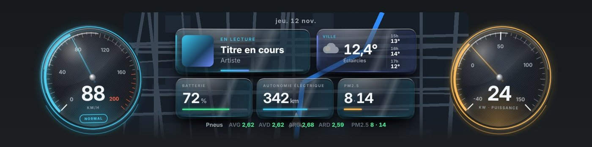
Testé et approuvé
VEKTRA s'adapte au combiné de ta BYD.
Tout le combiné
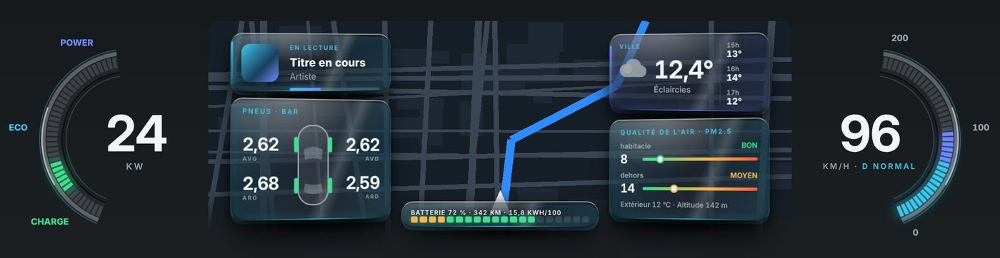
- Plein écran thèmele thème complet, avec ton application au centre
- Plein écran appWaze, Google Maps ou Navigation Vektra sur tout le combiné
- Carburant et autonomie sur les hybrides DM-i
Pensé pour son combiné
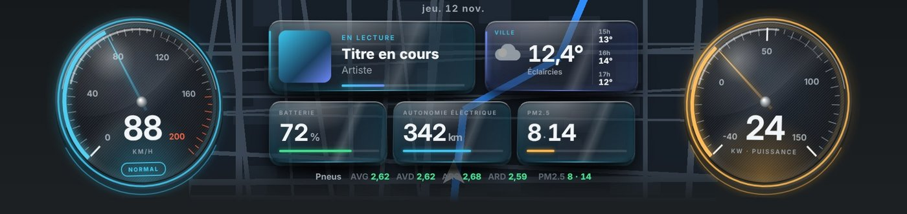
- Plein écranVEKTRA sous la bande du haut de la voiture
- Petit écranune fenêtre à droite avec ton application
- Une version Sealion 7 de chaque thème
- Vitesse, rapport, batterie, pneus et puissance de la voiture
11 thèmes, en clair et en sombre
Applique-les en un geste, puis déplace chaque élément comme tu veux dans Édition.
Carbone 3D+Cadrans 3D sous verre
VektraUI+Arches néon
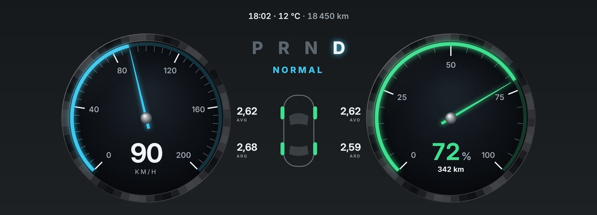
ChronographeCadrans de montre
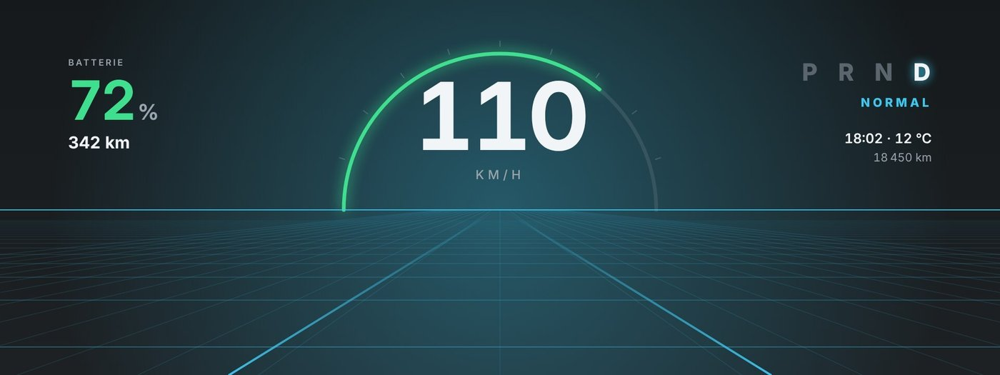
HorizonLa route défile avec ta vitesse
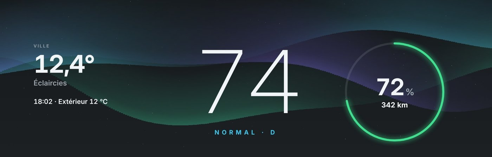
AuroreAurore boréale animée
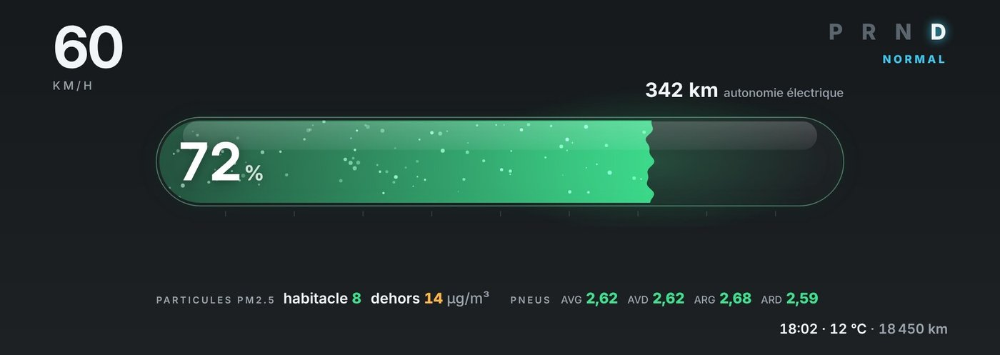
ÉnergieBatterie en capsule de plasma
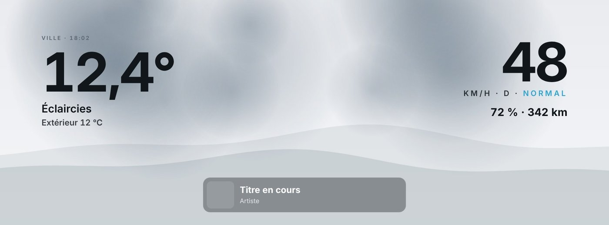
CielLa météo réelle en fond
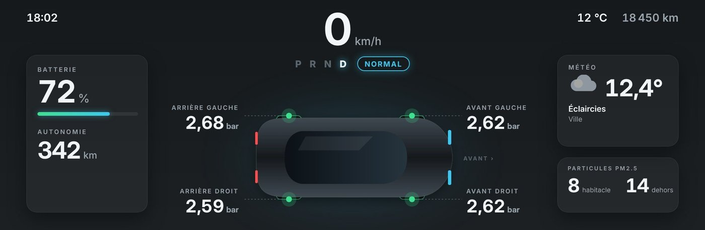
ChâssisPression de chaque pneu
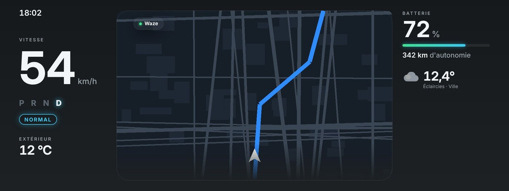
CarteTon application en grand
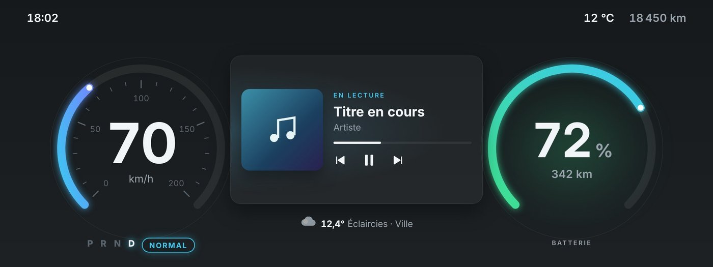
OrbitAnneaux vitesse et batterie
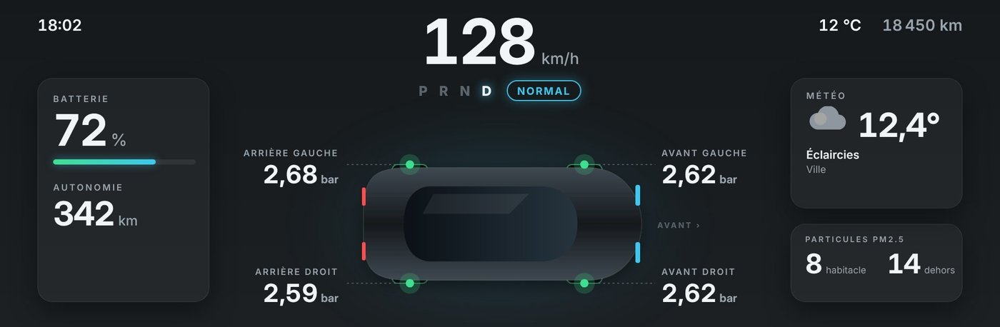
SportCouleurs du mode de conduite
Waze, Google Maps ou la carte Vektra derrière le volant
Dans le thème
- Carte, Carbone 3D+ et VektraUI+ gardent tes compteurs autour de l'application
- Navigation Vektra : la carte Vektra au centre du combiné
Plein écran app
- Seule l'application est affichée sur le combiné
- Déplace-la et redimensionne-la comme tu veux dans Édition
- Taille de l'application et du texte réglables, seulement sur le combiné : la tablette ne change pas
- Sealion 7 : aussi en Petit écran, dans la fenêtre de droite
Toutes les commandes de Vektra
Dis « Vektra », puis ta demande.
Aucune commande trouvée.
Ton copilote, toujours en éveil
Chaque alerte s'active ou se désactive dans l'onglet Copilote de l'application.
Prêt en 7 étapes
Les mises à jour se font ensuite directement dans l'application.
VEKTRA 2.6.2
En 10 langues. Les mises à jour arrivent ensuite directement dans l'application.
Nouveautés de la 2.6.2
- Correctif : l'assistant Vektra fonctionne de nouveau comme avant : le mot « Vektra » est de nouveau reconnu en ligne, sans téléchargement de langue.